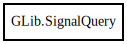

GLib.SignalQuery – gobject-2.0 Reference Manual
Packages
gobject-2.0
GLib
SignalQuery
itype
n_params
param_types
return_type
signal_flags
signal_id
signal_name
SignalQuery
Object Hierarchy:

Description:
[
CCode
( has_type_id =
false
) ]
public
struct
SignalQuery
Namespace:
GLib
Package:
gobject-2.0
Content:
Fields:
public
Type
itype
public
uint
n_params
public
unowned
Type
[]
param_types
public
Type
return_type
public
SignalFlags
signal_flags
public
uint
signal_id
public
unowned
string
signal_name